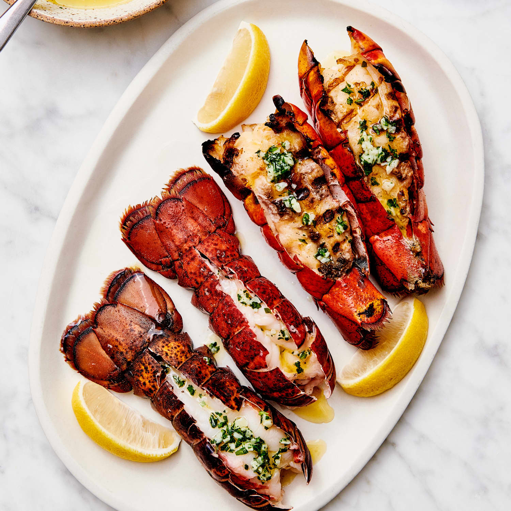

Lobster

Description
Indulge in a luxurious lobster dinner with our homemade recipe. Succulent lobster meat is cooked to perfection and served with buttery herbs for an unforgettable culinary experience.
Ingredients
- Lobster
- Butter
- Garlic
- Lemon
- Herbs
Steps to make delicious steak.
- Boil the lobster until cooked, remove the meat and cut into bite-sized pieces.
- Melt butter in a pan and add garlic and herbs, then add the lobster meat and cook briefly.
- Serve with lemon wedges and melted butter for dipping, for a delicious and indulgent lobster experience.